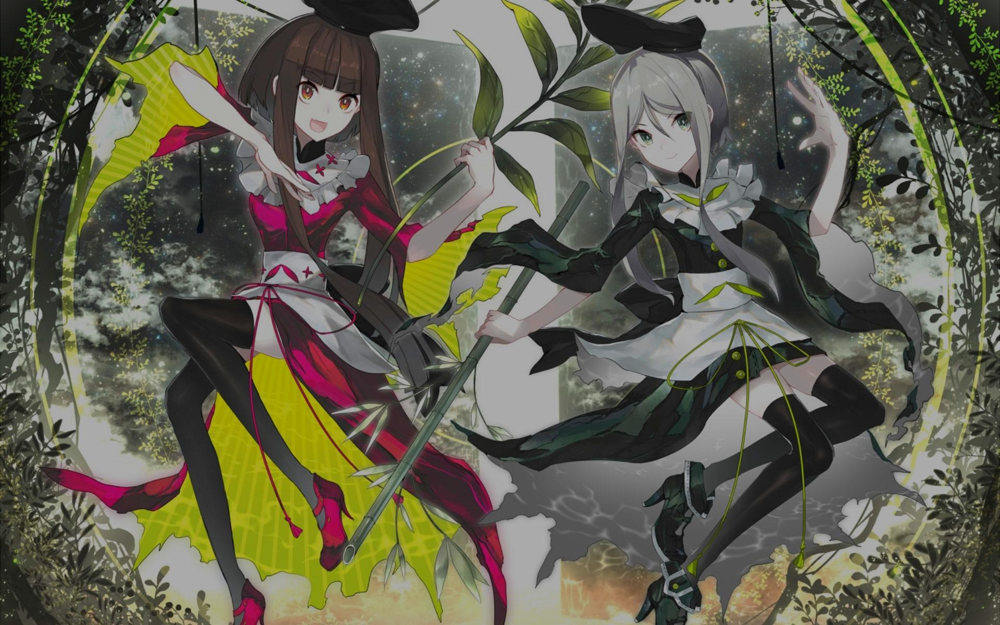

6.17
NM
NM
トランスダンスアナーキー
暁Records
6.04
NM
NM
Herz an Herz (Cut Ver.)
Blümchen
![Sir Mix-A-Lot - Baby Got Back (1103) [CORROSIVE's extra meat on them bones]](./darkened-backgrounds/4493432.jpg)
5.71
NM
NM
Baby Got Back
Sir Mix-A-Lot
Mapper: 1103
Difficulty: CORROSIVE's extra meat on them bones
Beatmap ID: 4493432
CS
4
AR
9.2
OD
8.5

128.5

3:14

1160
5.69
NM
NM
DERO
DUSTCELL
6.25
NM
NM
OPEN YOUR 3RD EYE
Schwank
Mapper: Amamya Kokoro
Difficulty: Heartfelt Burst
Beatmap ID: 4256603
CS
4
AR
9.5
OD
9.0
233.0
2:18
1201
5.69
NM
NM
Stutter
Shindig
5.88
HD
HD
Catanoph
An
Mapper: Ryuusei Aika
Difficulty: kanor's Extra
Beatmap ID: 1695209
CS
4.2
AR
9.0
OD
8.0
191.0
3:18
1651
5.35
HD
HD
Izayoi Sakura
Kozato Snow
![455-38B - G e n g a o z o - f o o n (ktgster) [Dada's Another]](./darkened-backgrounds/1938210.jpg)
5.79
HD
HD
G e n g a o z o - f o o n
455-38B
![yanaginagi - Sentimental (defiance) [Xilver's Another]](./darkened-backgrounds/3191337.jpg)
5.90
HR
HR
センチメンタル
やなぎなぎ
Mapper: defiance
Difficulty: Xilver's Another
Beatmap ID: 3191337
CS
5.2
AR
10.0
OD
10.0
180.0
3:58
1891
5.55
HR
HR
Laboratory-18
Riya
5.65
HR
HR
TSUBAKI
Ocelot
6.12
DT
DT
What's It Gonna Be?
Shura
5.89
DT
DT
一途
King Gnu
6.19
DT
DT
Scatman (ski-ba-bop-ba-dop-bop)
Scatman John
5.77
DT
DT
Medusa
Wednesday Campanella
5.89 (6.19)
FM
FM
飛行船
優里
Mapper: alevi
Difficulty: Kirishima-'s Expert
Beatmap ID: 3642326
CS
3.6
AR
9.2
OD
9.0
200.0
2:55
1085
5.03 (5.26)
FM
FM
Ebb Tide
とろまる
Mapper: KnightC0re
Difficulty: Wispy's Insane
Beatmap ID: 4621458
CS
4.1
AR
8.6
OD
7.2
142.0
2:44
1115
6.00 (6.68)
F+
F+
first death (TV Size)
TK from Ling tosite sigure
5.46 (6.23)
F+
F+
Jealous
EYEDRESS
6.20
TB
TB
フェノグラム
彩音